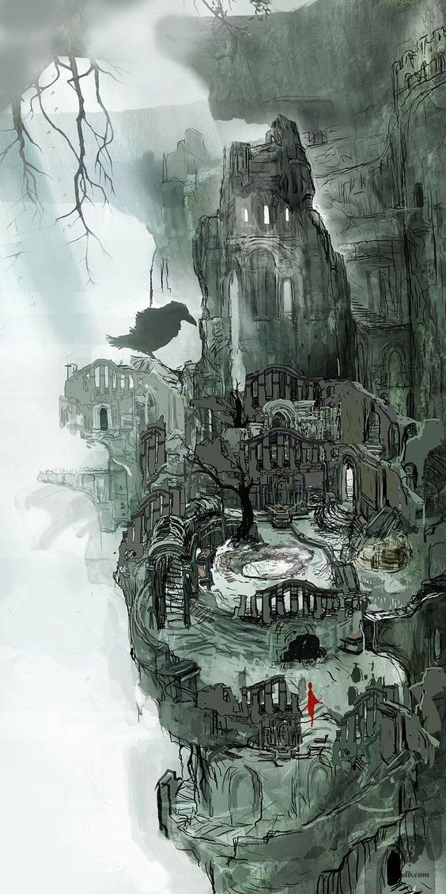

En la Edad Antigua, el mundo era amorfo y estaba envuelto en niebla. Una tierra de riscos grises, árboles gigantescos y dragones eternos. Pero entonces llegó el Fuego. Y con el Fuego, llegó la Disparidad. Calor y frío, vida y muerte, y por supuesto... Luz y Oscuridad. Entonces, ellos surgieron de la oscuridad. Y encontraron las almas de los dioses dentro de la llama. Nito, el primero de los muertos. La bruja de Izalith y sus hijas del caos. Gwyn el Señor de la Luz Solar, y sus leales caballeros. Y el furtivo pigmeo, a menudo olvidado. Con la fuerza de los dioses, desafiaron a los dragones. Gwyn y sus poderosos rayos despellejaron sus escamas pétreas. Las brujas tejieron tormentas de fuego. Nito provocó un miasma de muerte y enfermedad. Y Seath el Descamado traicionó a los suyos, y los dragones desaparecieron. Así comenzó la Edad del Fuego. Pero pronto las llamas se apagarán, y sólo quedará Oscuridad. Ahora solo quedan ascuas, y el hombre ya no ve el sol; tan solo noches eternas. Entre los vivos pueden verse a los que sufren la maldición de la Señal Oscura. Así es. La Señal Oscura de los no muertos. En esta tierra, han reunido a todos los no muertos para llevarlos al norte. Allí los encerrarán hasta que llegue el fin del mundo. Es tu destino... Pero las antiguas leyendas dicen que un día un no muerto será elegido para abandonar el Refugio de los no muertos, en peregrinación a la tierra de los antiguos dioses, Lordran.
El juego tiene lugar en los últimos días de la Edad de Fuego, la cual comenzó tras la derrota de los dragones que anteriormente gobernaban el mundo. Durante la Edad Antigua el mundo era un lugar oscuro y lúgubre habitado solamente por una raza inmortal de dragones gigantes cuya capacidad de prolongar su vida eternamente provenía de sus escamas. Así fue hasta que un grupo de seres descubrieron el poder de la Primera Llama y, siendo liderados por Gwyn, el Señor de la Luz Solar, acabaron con casi la totalidad de los dragones en una legendaria guerra que dio origen, tras la derrota del bando reinante, a la Edad de Fuego. Durante la Edad de Fuego aparecieron todos los seres vivientes que se ven en el mundo de Dark Souls.